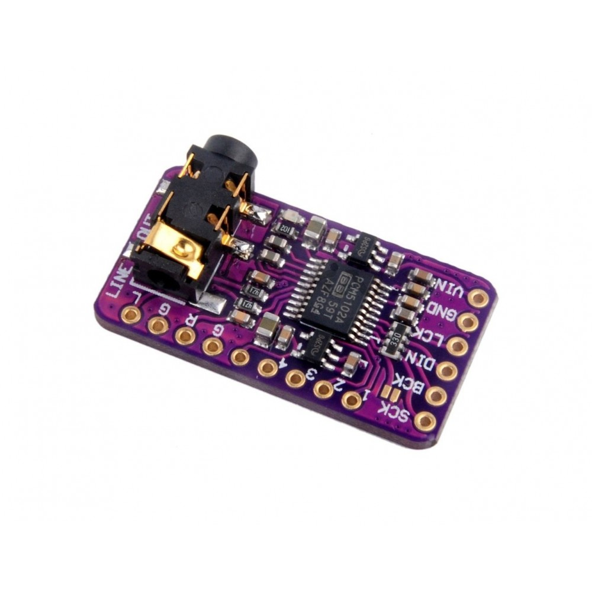
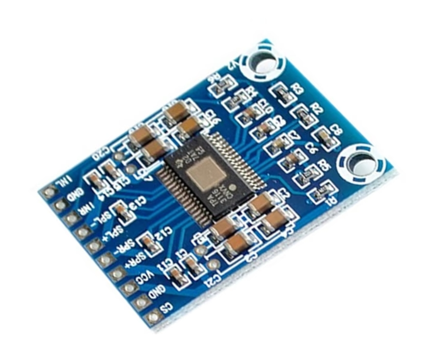

DIY 5.1 AUDIO AMPLIFIER • COPPER CHIMNEY V2
COMPLETE COMPONENT-LEVEL ELECTRONIC CIRCUIT SCHEMATIC
CIRCUIT 1: AC MAINS RECTIFICATION, 24V BUS & XL4015 BUCK REGULATOR
POWER STAGE

Mean Well LRS-350-24
24V DC • 14.6A • 350.4W

4700µF 50V Low-ESR
CIRCUIT 2: DUAL-MCU AUDIO (ESP32-S3-PICO MASTER + ESP32-WROOM-32 SLAVE) + 4.3B WIRELESS TOUCH HMI & 3× PCM5102A DACS
DIGITAL & DAC STAGE

PCM5102A DAC (HW-280)
32-Bit 384kHz • 112dB SNR

ESP32-S3-Pico (1552780)
+ 4.3B Touch (Model 28141)

ESP32-WROOM-32 30-pin (Slave)
CIRCUIT 2.5: COMPLETE SIGNAL CHAIN — ESP32-S3 → PCM5102A DAC → XH-M562 TPA3116D2 AMP
SIGNAL CHAIN OVERVIEW
Should I solder ALL 10 pads of the XH-M562 Amp?
| Pad | Label | Function | Solder? |
|---|---|---|---|
| 1 | INL | Left analog audio in (from DAC LOUT) | ✔ YES |
| 2 | AGND | Signal/analog ground (cable shield return) | ✔ YES |
| 3 | INR | Right analog audio in (from DAC ROUT) | ✔ YES |
| 4 | SPL− | Left speaker BTL negative (to speaker −) | ✔ YES |
| 5 | SPL+ | Left speaker BTL positive (to speaker +) | ✔ YES |
| 6 | SPR+ | Right speaker BTL positive (to speaker +) | ✔ YES |
| 7 | SPR− | Right speaker BTL negative (to speaker −) | ✔ YES |
| 8 | VCC | 24V DC power input from PSU | ✔ YES |
| 9 | GND | Power ground return to PSU − | ✔ YES |
| 10 | CS / STBY | Chip Select / Standby. Leave FLOATING = always ON. Solder only if you want software mute control. | ⚠ OPTIONAL |
Key Wiring Rules
⚠ BTL RULE (Pads 4,5,6,7): NEVER connect any speaker terminal (SPL+/SPL−/SPR+/SPR−) to chassis ground or PSU ground. Both speaker leads float freely between the two BTL output phases.
✔ Pad 2 (AGND) ≠ Pad 9 (GND): AGND is the quiet signal-reference ground (from DAC cable shield). GND (Pad 9) is the noisy power return. Connect them together only at ONE star-ground point on the board — do NOT run them in a loop.
✔ Pad 10 (CS/STBY): On the XH-M562, this pad is internally pulled HIGH (amp ON) via a resistor. If you leave it unsoldered, the amp stays always ON — which is fine. Only solder it if you wire it to an ESP32 GPIO for software standby/mute.
CIRCUIT 3: XH-M562 TPA3116D2 CLASS-D AMPLIFIER TOPOLOGY & BTL LC FILTER
AMPLIFIER OUTPUT STAGE

XH-M562 TPA3116D2
2×50W @ 24V 4Ω • Solder Pads
FLOATING BTL!
No Speaker Lead to Ground!
CIRCUIT 4: 3.5mm STEREO AUX IN & PCM1808 24-BIT STEREO ADC STAGE
ANALOG LINE INPUT

PCM1808 24-Bit ADC
105dB SNR • Single-Ended In
CIRCUIT SCHEMATIC REFERENCE: DIY 5.1 Fanless Cube (Copper Chimney V2) •
CHIPS: 3× TPA3116D2, 3× PCM5102A, 1× PCM1808, 1× ESP32-S3-Pico, 1× ESP32-WROOM-32, 1× XL4015
Compatible with Screen Inspection, Tablet HMI & High-Contrast Physical Printing